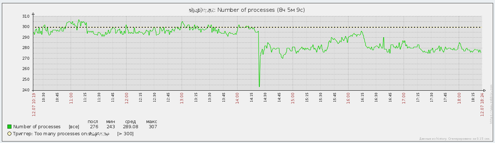

Большинство серверов со сложной логикой имеет многопроцессную или многопотоковую архитектуру. При этом каждый процесс или поток занимается обслуживанием либо одного клиента, либо одного запроса. Не исключение тут и PostgreSQL, который имеет многопроцессную архитектуру, в которой процессы взаимодействуют между собой через разделяемую область памяти. Недостатки подобной архитектуры давно известны.
Во-первых, при установлении подключения создаётся новый процесс или поток. Это не бесплатная операция и она потребляет ресурсы. Создание нового потока требует меньше ресурсов, чем создание нового процесса, но так или иначе ресурсы всё равно потребляются. Если часто устанавливать соединения и закрывать их, процессы будут создаваться и закрываться. Чтобы как-то смягчить последствия частых подключений и отключений, в серверах часто прибегают к повторному использованию однажды порождённого процесса или потока, для чего ненужные процессы или потоки не уничтожаются сразу, а на некоторое время остаются "на подхвате".
Подобные проблемы в отношении баз данных особенно часто возникают при использовании CGI-приложений. Схема работы CGI приложений такова, что для обслуживания одного клиентского запроса программа должна установить необходимые подключения к базам данных и различным сервисам, считать необходимые файлы, затем обработать один запрос клиента и завершиться. При обслуживании каждого запроса вся процедура повторяется с начала, включая повторное установление подключений к базам данных.
Во-вторых, каждый процесс или поток, созданный для обслуживания одного пользователя или одного запроса, держит ресурсы, даже если не осуществляет никакой активной работы. Веб-приложения, работающие по протоколу FastCGI или ему подобному (SCGI, uWSGI), не устанавливают новые подключения к базе данных каждый раз при получении нового запроса. Вместо этого подобные приложения запускаются единожды, открывают необходимые подключения и загружают необходимые ресурсы, а затем последовательно обрабатывают поступающие запросы. Такая схема работы избавляет от недостатков CGI, но порождает другой недостаток - однажды запущенное приложение FastCGI держит открытыми подключения к базе данных, даже если не обслуживает никаких запросов.
Веб-серверы Lighttpd и nginx стали популярны во многом благодаря тому, что позволили нивелировать недостаток веб-сервера Apache как сервера приложений. Apache построен по гибридной многопроцессной и многопоточной архитектуре, но поддерживает повторное использование процессов и потоков. Поэтому для Apache характерен второй недостаток. Когда есть много медленных клиентов, выходящих в интернет через модем или GPRS, Apache быстро обрабатывает запрос клиента, а потом медленно-медленно отдаёт ему результат. Пока результат отдаётся клиенту процесс или поток практически ничем не заняты, но продолжают удерживать ресурсы, которые могли бы пригодиться для обработки запросов от других пользователей.
И тут на сцене появились Lighttpd и nginx, которые сочетают в себе две функции - отдачу файлов с диска и проксирование запросов. Кстати, эти веб-серверы были не первыми, до них были boa, thttpd, mathopd, которые были построены по той же архитектуре - мультиплексирование запросов в пределах одного однопоточного процесса. Позже, для того чтобы равномерно нагружать все имеющиеся процессорные ядра, в некоторых из этих серверов (nginx, например) была добавлена возможность обработки соединений несколькими процессами. Так вот, эти веб-серверы, по сути, выполняют ровно две задачи. Первая - отдавать клиентам неизменяющиеся файлы в обход сервера приложений, вторая - быстро забрать у сервера приложения ответ, освободив тем самым ресурсы для обслуживания другого запроса, и затем отдавать этот ответ клиенту с той скоростью, с которой он готов его принимать.
Остаётся только догадываться о том, достигли бы эти серверы хоть какой-либо, не то что популярности, а вообще - известности, если бы разработчики Apache вовремя догадались встроить в него прокси. Разработчики веб-сервера Microsoft IIS до подобного решения догадались и встроили проксирование запросов в специальный драйвер http.sys.
Прошу прощения за столь долгое вступление, но оно очень полезно для того, чтобы описать, чем занимается pgbouncer и в чём его польза. Так вот, pgbouncer - это такой прокси для протокола PostgreSQL, каковым является nginx для протокола HTTP или его аналогов (FastCGI, SCGI, uWSGI). К сожалению, в случае с СУБД, мы имеем дело не с запросами без учёта состояния, а с полноценными сеансами, поэтому проксирование в данном случае является скорее трюком, нежели законным способом избавиться от описанных проблем. pgbouncer позволяет во-первых, уменьшить частоту порождения и уничтожения процессов PostgreSQL, занимающихся обслуживанием запросов пользователей, а во-вторых - уменьшить простой однажды порождённого процесса, заставляя один процесс обрабатывать запросы, которые раньше обрабатывались бы несколькими процессами.
Итак, установим pgbouncer:
# apt-get install pgbouncer
Теперь займёмся его настройкой. Откроем файл /etc/pgbouncer/pgbouncer.ini и впишем в секцию databases следующие настройки:
zabbix = host=localhost dbname=zabbix user=zabbix redmine_default = host=localhost dbname=redmine_default user=redmine_default
В секции pgbouncer пропишем такие настройки:
auth_type = md5 pool_mode = transaction
Первая настройка указывает, что при аутентификации pgbouncer'а на сервере будет использоваться учётная запись с хэшированным по алгоритму md5 паролем. За неимением лучших вариантов приходится пользоваться md5. Вторая настройка говорит, что в пределах одного и того же подключения к серверу должна выполняться транзакция. Вариант session не позволит нам сэкономить ресурсы на простаивающих соединениях, а лишь решит проблему с частым порождением и уничтожением процессов, происходящих при обслуживании запросов веб-интерфейсом Zabbix. Вариант statement предписывает выполнять в пределах одного и того же процесса только один запрос, но это может привести к несогласованным изменениям данных. Транзакция может включать в себя несколько запросов, которые изменяют содержимое базы данных согласованным образом. Для достижения согласованности изменений нужно чтобы при ошибке в одном из запросов ни один из запросов не изменил содержимое базы данных, а содержимое было бы изменено только в том случае, если все запросы внутри транзакции успешно выполнились.
Далее, при желании, можно настроить максимальное количество разрешённых подключений от клиентов, количество подключений в пуле, таймауты подключений в пуле и т.п. Если pgbouncer будет принимать подключения от нелокальных клиентов, нужно задать прослушиваемый IP-адрес в директиве listen_addr.
Теперь откроем файл /etc/pgbouncer/userlist.txt и впишем в него имена пользователей и их пароли, чтобы pgbouncer мог аутентифицироваться при установке подключений к СУБД и мог сам аутентифицировать подключающихся клиентов (на мой взгляд - хранить пароли ещё в одном месте весьма сомнительная затея, но разработчики, видимо, не предусмотрели возможность брать необходимые данные от клиентов и использовать их при при подключении к серверу):
"zabbix" "zabbix_password" "redmine_default" "redmine_default_password"
Осталось разрешить запуск pgbouncer и запустить его. Для этого откроем файл /etc/default/pgbouncer, пропишем в опцию START значение 1 и запустим его:
# systemctl start pgbouncer
По умолчанию pgbouncer ожидает подключений на порту 6432, то есть номер порта на тысячу больше, чем стандартный порт PostgreSQL. В случае локальных подключений клиент умеет автоматически использовать Unix-сокет, находящийся в каталоге /var/run/postgresql/ и на этот случай pgbouncer создаёт в этом каталоге свой Unix-сокет, который содержит в своём имени номер прослушиваемого TCP-порта.
Теперь осталось перенастроить приложения на использование pgbouncer.
Начнём с Zabbix-сервера. Откроем файл /etc/zabbix/zabbix_server.conf и впишем номер порта pgbouncer'а:
DBPort=6432
Перезапустим Zabbix-сервер:
# systemctl restart zabbix-server
Теперь перенастроим веб-интерфейс Zabbix. Откроем файл /etc/zabbix/web/zabbix.conf.php и пропишем номер порта:
$DB['PORT'] = '6432';
Перезапустим php5-fpm, чтобы настройки веб-приложения вступили в силу (не уверен что это необходимо):
# systemctl restart php5-fpm
Теперь настала очередь Redmine. Тут всё оказалось не совсем просто. Дело в том, что в Rails-приложениях активно используются заготовленные запросы. Что это такое? Это такой шаблон запроса, в котором вместо конкретных значений указаны символы подстановки. СУБД может заранее разобрать такой запрос, пропустить через оптимизатор и составить план выполнения запроса. Затем подготовленный запрос можно использовать многократно, указывая конкретные значения, которые заменят символы подстановки из подготовленного запроса. При этом СУБД экономит время, не повторяя этапы синтаксического разбора, оптимизации и составления плана выполнения запроса, выполняя эту обработку единожды при подготовке запроса, а затем многократно используя её результаты при каждом выполнении запроса.
Оказалось, что использование подготовленных запросов можно отключить через файл /etc/redmine/default/database.yml, содержащий настройки подключения Redmine к базе данных. Соответствующую опцию я нашёл по ссылке Configuring Rails Applications, 3.14.3 Configuring a PostgreSQL Database. Итак, редактируем файл /etc/redmine/default/database.yml, прописав в нём номер порта и опцию prepared_statements:
production: adapter: postgresql database: redmine_default host: localhost port: 6432 username: redmine_default password: redmine_default_password encoding: utf8 prepared_statements: false
Осталось перезапустить Redmine:
# systemctl restart uwsgi
Стоит отметить, что отключение подготовленных запросов может отрицательно сказаться на производительности Redmine. Но в моём случае Redmine используется очень редко, поэтому мне важнее не улучшить его производительность, а снизить потребление ресурсов системы. Это будет достигнуто за счёт того, что pgbouncer будет устанавливать подключение к PostgreSQL только в те моменты, когда кто-то будет пользоваться Redmine. Если же им никто не пользуется, то спустя некоторое время соединение к СУБД будет закрыто и ресурсы, удерживавшиеся процессом PostgreSQL, будут возвращены системе.
Результат произведённых действий можно лицезреть на графике, отображающем количество процессов в системе до и после внедрения pgbouncer:
Кроме PostgreSQL на этом компьютере работает ещё масса всяких программ, но результат уменьшения количества процессов PostgreSQL заметен даже на общем фоне.